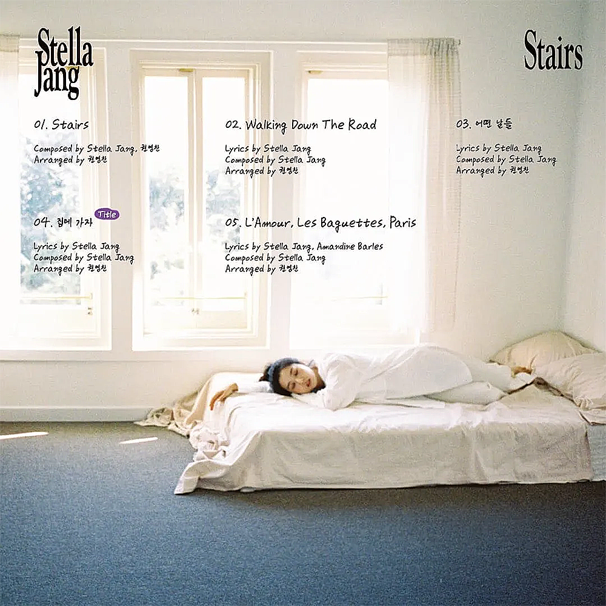

안녕하세요
저는 파리에 대한 로망은 없지만, 영화 미드나잇 인 파리(2011)을 보고 파리가 궁금해지긴 했습니다. 또 하나 이 노래를 들으면 파리에 가고 싶어지는데요, 스텔라장의 L’Amour, Les Baguettes, Paris 입니다.

스텔라장 - L’Amour, Les Baguettes, Paris
스텔라장은 한국사람이지만 불어 발음도 좋고 이 노래를 불어로 불러서, 프랑스 원곡이 있는 느낌이 들지만, 스텔라장이 만든 오리지널 원곡입니다. 중학생 때부터 프랑스에서 공부하며 프랑스를 그대로 느낀 스텔라장은 이 3개의 단어로 파리의 느낌을 전달하며, 불어를 잘 모르는 사람조차도 이 노래를 들으면 따뜻한 느낌과 함께 파리에 가고싶어지게 만듭니다.
스텔라장 - L’Amour, Les Baguettes, Paris 가사
C'est drôle, je ne sais pourquoi
Ça me fait toujours penser à toi
Pour plein d'autres gens, c'est la magie
L'amour, les baguettes, Paris
이건 이상해, 왜 그런지 모르겠어
나를 항상 네 생각으로 이끌어
다른 사람들에게는 마법 같아
사랑, 바게트, 파리
Toujours au même endroit
Comme si c'était hier, j'te vois
Pour plein d'autres gens, c'est la magie
L'amour, les baguettes, Paris
항상 같은 자리에서
마치 어제 같아, 너를 보네
다른 사람들에게는 마법 같아
사랑, 바게트, 파리
Eux voient les lumières, les paillettes
La tour Eiffel, la Seine, les fêtes
Mais moi, quand j'arrive sur cette rue
J'pense à toi qui ne réponds plus
그들은 빛과 반짝임만을 보네
에펠탑, 세느강, 파티
하지만 난 이 거리에 오면
더 이상 연락되지 않는 너를 생각해
Même si je ne te revois pas
Tu seras toujours une partie de moi
Pour plein d'autres gens, c'est la magie
L'amour, les baguettes, Paris
네가 다시 보이지 않더라도
넌 언제나 내 일부일 거야
다른 사람들에게는 마법 같아
사랑, 바게트, 파리
Les fous rires sur ces marches
Résonnent dans ma mémoire
Je les emporte là où je pars
이 계단에서의 웃음소리
내 기억 속에 울려 퍼져
난 그걸 어디로 가든 가지고 다녀
Eux voient les lumières, les paillettes
La tour Eiffel, la Seine, les fêtes
Mais moi, quand j'arrive sur cette rue
J'pense à toi qui ne réponds plus
그들은 빛과 반짝임만을 보네
에펠탑, 세느강, 파티
하지만 난 이 거리에 오면
더 이상 연락되지 않는 너를 생각해
Pour moi ce n'est pas juste une ville
C'est l'histoire de nos passions juvéniles
Pour plein d'autres gens, c'est la magie
L'amour, les baguettes, Paris
나에게 파리는 단순한 도시가 아니야
우리 젊은 시절의 열정의 이야기야
다른 사람들에게는 마법 같아
사랑, 바게트, 파리